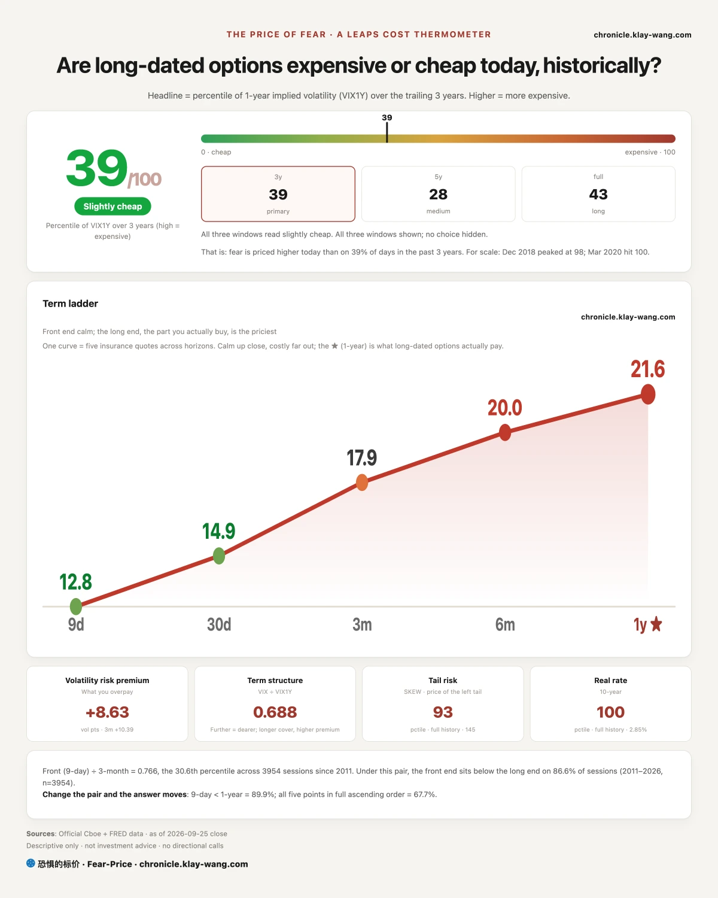
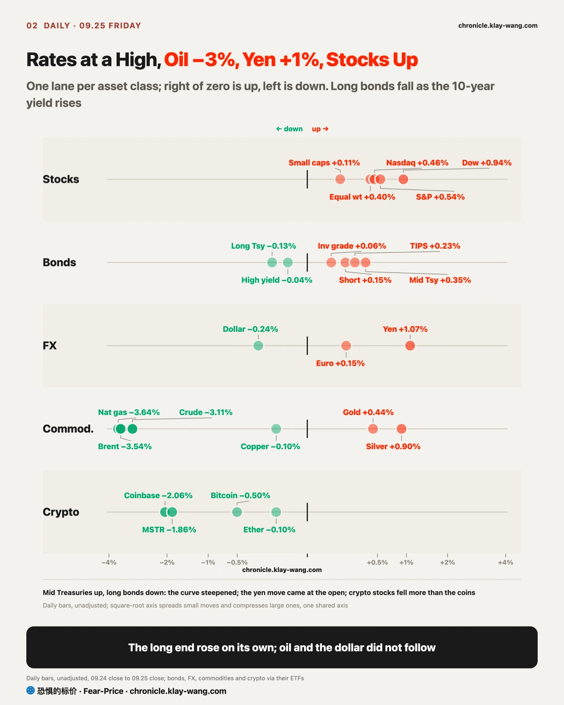
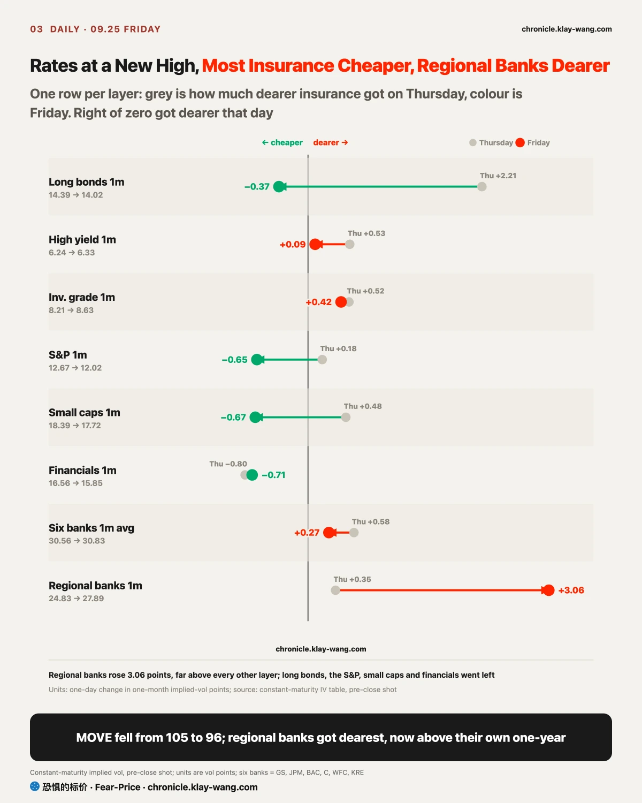
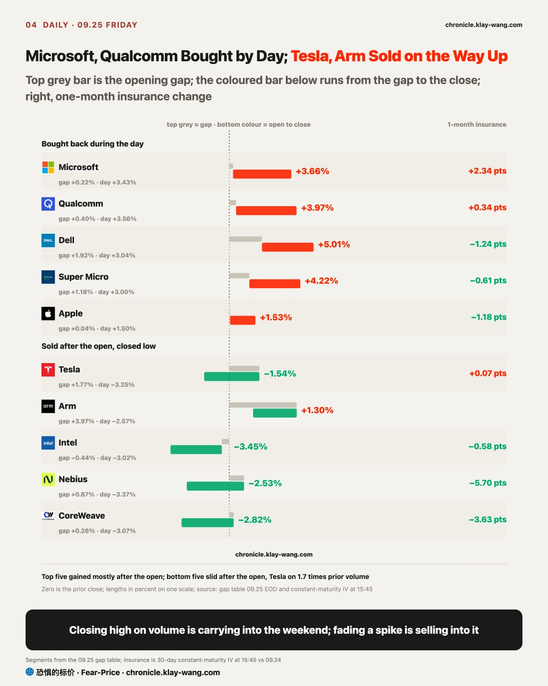
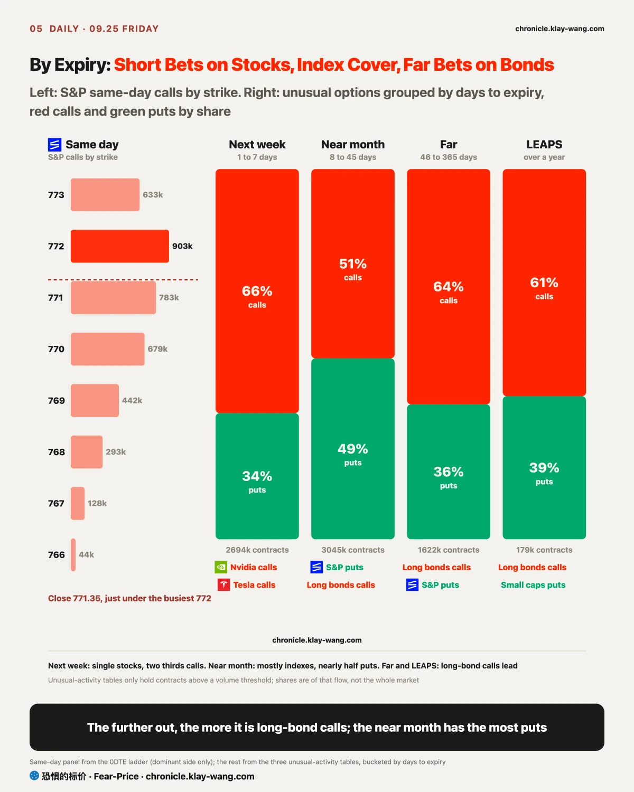
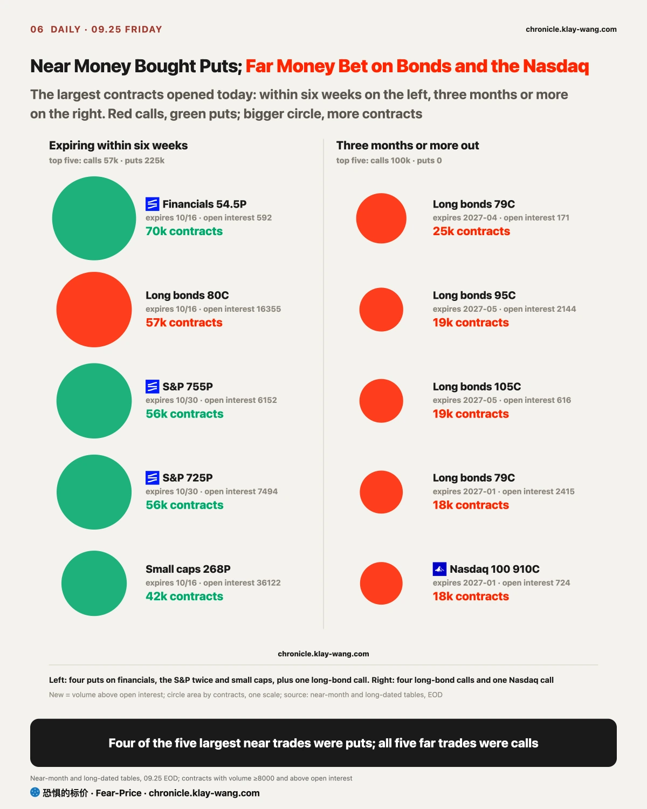

Fear-Price Index · Sep 25, 2026 · reading 39.0/100: one-year volatility VIX1Y at 21.60, in the 39.0th percentile of the past three years, where high means expensive. Daily ledger and definitions at chronicle.klay-wang.com · Please credit: Fear-Price Index
The index fell from 43.3 on Thursday to 39.0, with VIX1Y going from 21.82 to 21.60 and the one-month VIX from 15.67 to 14.87. On the day the 10-year closed at its highest since 2007, a year of protection on stocks got cheaper; the stock market did not treat the new high in rates as a new risk. For you: a year of protection on a stock portfolio costs less than on Thursday.
The K index is 2.488, above the final 2.281 on Thursday. The closer it gets to 1, the more people back their worry by buying protection. Fear and Greed leans toward fear while money spent on protection is shrinking: people sound gloomy and are not paying for it. At the Fear and Greed reading of today, VIX would need to rise above 37 for K to fall below 1. History at chronicle.klay-wang.com/kindex, the index itself at chronicle.klay-wang.com/fear-price.

The US 10-year Treasury yield closed at 5.18% on Friday, the highest since July 2007, and the 30-year at 5.50%. The push was household inflation expectations: the final University of Michigan September survey put expected inflation over the next year at 4.6%, the highest since June. The main crude oil fund fell 3.1% the same day, and yields still rose, so the push is no longer only energy. Once households believe prices will keep rising, they buy early and ask for raises, and the Fed finds it harder to stop hiking.
As the climb slowed, insurance got cheaper. The 10-year rose about 15 basis points on Wednesday and only 2 on Friday, and MOVE went from 105 to 96, 8% cheaper in a day. The price of insurance follows the size of the swings, not the direction.
Regional banks went the other way. One-month insurance on the regional bank fund rose from 24.83 to 27.89, above its one-year at 25.91; all six banks have one-month insurance above one-year, and a near-the-money put on the financials fund traded 70097 contracts against open interest of 592. Bank shares rose, so holders are keeping the stock and adding cover for the next few weeks. If you hold regional banks, one-month protection now costs about 2 points more than one-year. Regional banks hold a lot of long-dated bonds, and when rates rise those bonds lose value, which is the road Silicon Valley Bank went down in 2023.
My read is that the rate shock will land on regional banks first, with tech later. If regional bank one-month insurance falls back below its one-year before October 2, or less than half of these financials puts are still held on Monday, that read fails. The August monthly issue argued the market had paid for one hike, not a series, to be withdrawn if MOVE reached the 90th percentile of the past three years; it peaked at the 71.7th this week, so that call is settled as right.

US bonds and US stocks are the same order of size: by the count of the Securities Industry and Financial Markets Association, US bonds outstanding were about 61.2 trillion dollars at the end of 2025 and US stock market value about 68.9 trillion; globally it is 160.7 trillion in bonds against 157.8 trillion in stocks, nearly equal. What makes bonds matter is not their size but that they are the measuring stick and the collateral for every other asset.
Bonds reach stocks by three roads. The first is discounting: the 10-year yield is the discount rate for valuing stocks, so when it rises, distant cash flows are worth less, and assets whose cash comes far out or that attract buyers with dividends are hit first; utilities fell 3.9% this week, the worst sector. The second is comparison: the S&P 500 trades at about 24.9 times earnings, an earnings yield of about 4.0%, 1.2 points below the 10-year at 5.18%, so the earnings behind a stock now pay less than the interest on a Treasury, and prices can only be held up by earnings growth. The third is collateral: Treasuries are the main collateral of the financial system, and when rate insurance spikes, money levered against Treasuries has to post more margin and sell something else; a Bank of America strategist watches for two lines breaking together, MOVE above 125 and a global financials index below 125; MOVE was 96 on Friday.
When something breaks, the bond market is rescued first. In March 2020 the Fed bought Treasuries outright; in the 2022 UK pension blow-up the Bank of England bought gilts; after Silicon Valley Bank in 2023 the Fed took Treasuries as collateral at face value. This week the Treasury has also been buying back long bonds, officially to support liquidity, and it bought back a smaller share than two weeks ago. For you: the bottom in stocks usually waits for bonds to steady first, and MOVE tends to tell you before stock prices do.
Back to the two questions in the title. A crisis has not arrived yet: the line Bank of America watches needs MOVE above 125, it was 96 on Friday, and insurance on both stocks and bonds got cheaper. Which market is right comes down to inflation. Bonds are pricing household inflation expectations of 4.6%, with the 10-year at 5.18%; stocks are pricing earnings growth, with the S&P 500 earnings yield 1.2 points below the 10-year. If inflation expectations do not come down, bonds are right and stock valuations have to give; if inflation eases and rates follow, stocks are right, and that is also the side the long-bond calls bought on Friday are betting on.

Single stocks took two shapes on Friday. The opening price mostly reflects overnight news; the move after the open is who actually traded. A rise on heavy volume that closes near the high means someone is willing to carry the position into the weekend; a spike on heavy volume that closes near the low usually means someone is selling into strength.
Microsoft rose 3.7% on 2.3 times its prior volume, the heaviest among the 47 names we track, and closed near its high, at its highest close since early November last year. On Wednesday it launched a Copilot super app that combines chat, coding and tasks the AI completes on its own, and Oppenheimer then raised its price target to 570 dollars. Qualcomm rose 4.0% on nearly twice its prior volume; it opened only 0.4% higher, so almost all of the gain came during the day. It renewed its global patent licence with Apple on Thursday and fell 1.5% that day; buyers came back on Friday, and its 13.7% weekly gain is the biggest among the names we track.
Tesla went the other way. It opened 1.8% higher, fell 3.3% from the open and closed down 1.5% on 1.7 times its prior volume, in the bottom quarter of its range. On the news side, Semi truck production began in Nevada without delivery or profit timelines, and European approval for FSD was delayed. Intel opened lower and kept falling, down 3.5% to close near its low of the day after more than tripling this year, which is profit-taking; its one-month insurance got 10 points dearer this week, the most on our list. If you hold Tesla or Intel, whether they get back to the Friday open next week will say whether this was selling or just changing hands.
AI hardware and compute renters are being priced apart too. Dell rose 5.0% and Super Micro 4.2%, while CoreWeave and Nebius fell on thin volume with their insurance getting cheaper. Goldman estimates the six largest cloud builders will spend about 1.73 trillion dollars on capital expenditure in 2026 and 2027, with the return arriving after 2028; Morgan Stanley thinks shortages of memory and hard drives could last five years or more. The sellers of equipment already have the orders; the renters spend first and earn it back later, and the market rewarded the first. Meta fell 3.3%, and only 46.8% of the calls bought on September 21 ahead of Connect stayed, so the call that they were an event bet barely stands.
Crypto stocks fell more than the coins. The bitcoin ETF fell 0.5%, MSTR 1.9% and Coinbase 2.1%. Yet MSTR drew 115 million dollars of call premium that day against 9.7 million on puts: on a down day, someone bet on a rebound. Micron reports on September 30; among options expiring within a week, excluding same-day expiries, 4.7 times as much premium went to its calls as to its puts, though the largest trade looks like old positions changing hands.

Lay out the unusual options of Friday by expiry and they form a clear ladder. Same day: the S&P 500 ETF closed at 771.35, just under the busiest call strike at 772, pinned near the most crowded strike. Within a week it was all single stocks, two thirds calls; from 8 to 45 days more than half was indexes, with nearly half in puts; further out, long-bond calls dominated.
Nasdaq options pointed in opposite directions at two horizons. Near end: the October 30 put struck 2.6% below the price traded 39074 contracts, 19 times its open interest; October brings the jobs report, CPI and earnings, and this is insurance for that stretch. Far end: Nasdaq calls expiring three months or more out traded 45714 contracts against only 10165 puts, the reverse of the day before; the Nasdaq ETF closed at 744.50, 0.6% below its June high. If you hold a Nasdaq fund, someone near the date has insured against a 2.6% drop, while the far money is betting on 2027.
Long-bond fund calls expiring three months or more out traded 303k contracts on Friday, the most in a day since September began; on the day the 10-year hit a 19-year high, money betting on lower rates placed its largest bet of the month. The Nvidia 2028 460 call from Thursday kept 92% of its volume overnight, a new long-term position, and the call is confirmed.
If you hold bonds or bond funds: rates are still rising, but more slowly; MOVE fell 8% in a day. Far-dated money is betting rates come back within a year or two; that is a bet on where it ends, and the bumps on the way are still there.
If you hold index funds: indexes closed higher, and both one-year and one-month protection cost less than on Thursday. October index puts are trading heavily, so people are already adding cover for that stretch.
If you hold big tech: Microsoft and Apple closed near their highs on heavy volume and Qualcomm rose strongly, while Tesla and Arm were sold on the way up and Intel opened lower and kept falling. Two shapes on the same day; what matters is who bought after the open, not the overnight news.
If you hold bank stocks: shares rose, but one-month protection costs more than one-year, most clearly at regional banks. Over the next few weeks, watch whether short-term insurance on regional banks falls back below their one-year.